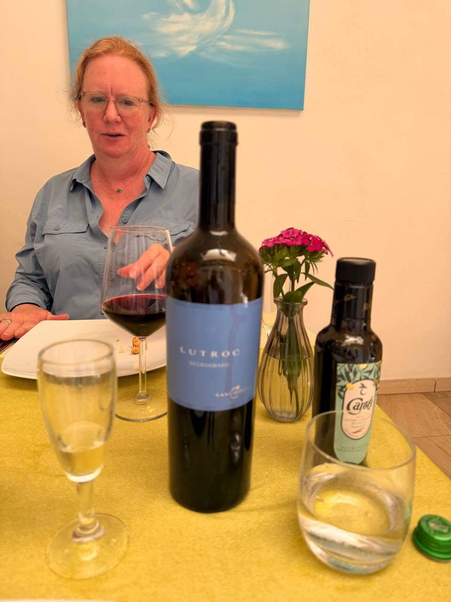
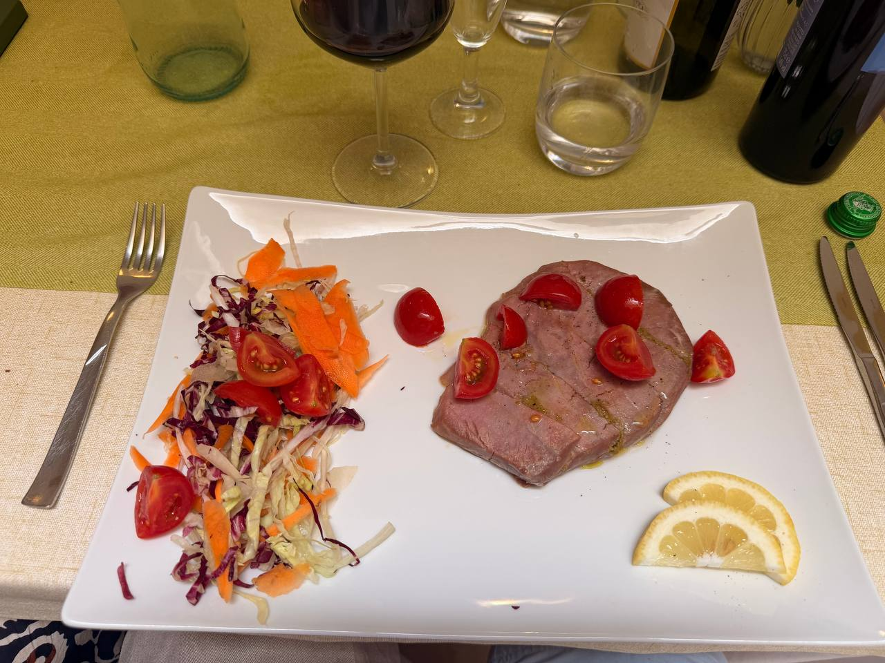
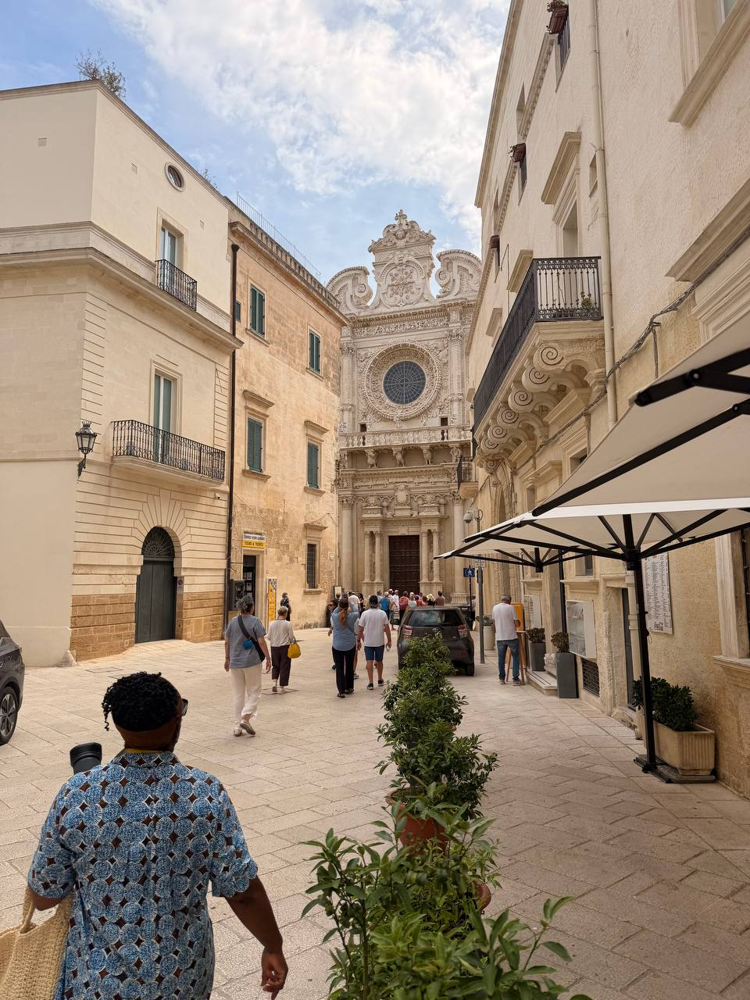
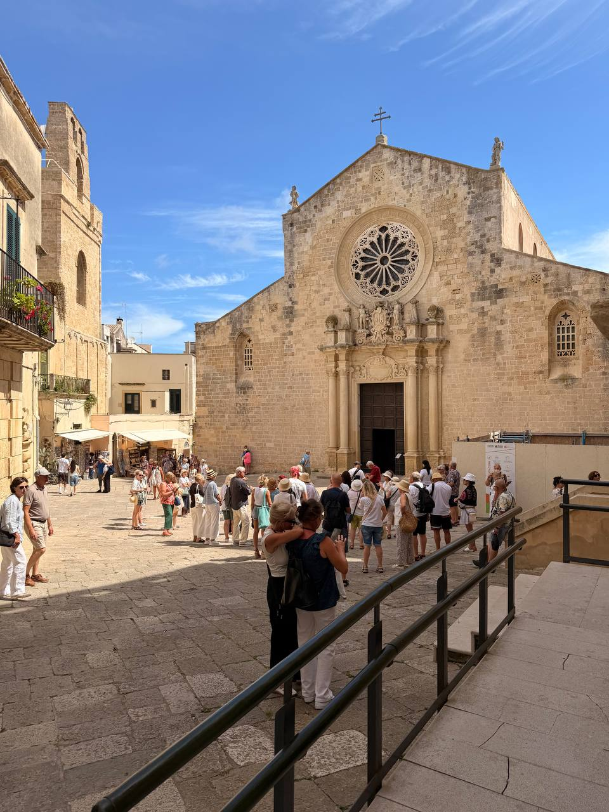
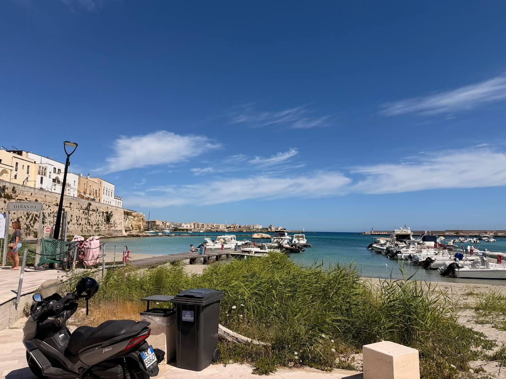
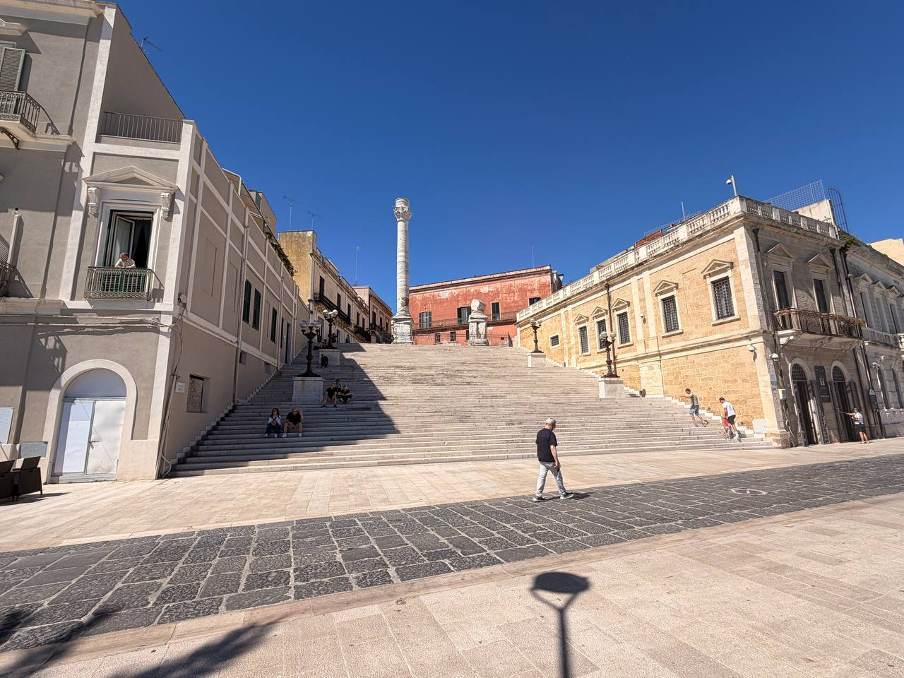
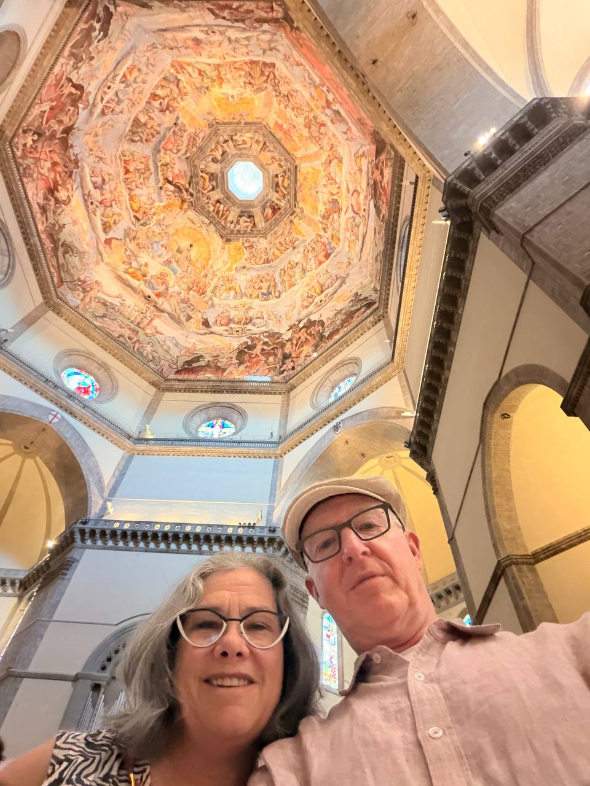
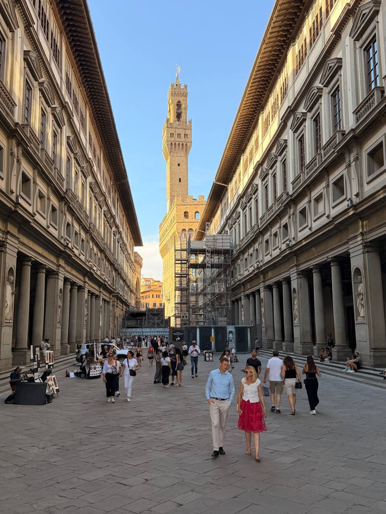
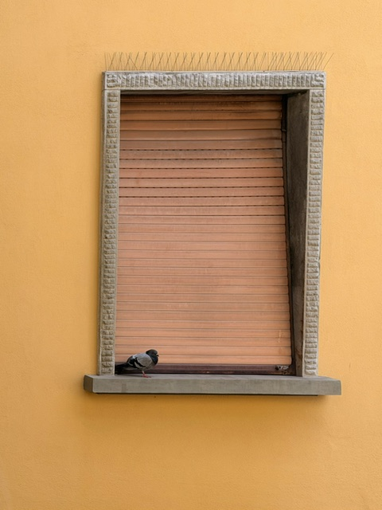

Dan Green
Invalid Date

A periodically updated wine post for notable bottles from the Italy trip, with photos, links, and meal context.

A June 16 Lecce post: Basilica di Santa Croce, lunch at Giardino Segreto, the Roman amphitheatre remains, and the evening Otranto boat-plan anchor.

A focused Lecce post on the Basilica di Santa Croce: its exuberant Baroque facade, dense carved stonework, rose window, interior chapels, and relic of the Cross.

Otranto Cathedral’s Tree of Life mosaic, harbor lunch, and the evening coast at Punta Palascia and Porto Badisco.

From Brindisi’s quieter harbor to Masseria dei Monaci near Otranto: the trip turns toward Puglia, heat, stone, olives, and the Adriatic.

A long Naples-to-Brindisi travel day, two delayed flights, a quiet hotel, and a first Puglian harbor dinner.
A partial note from the Herculaneum and Mount Vesuvius day: volcanic logistics, missing hiking poles, and pizza notes still waiting for pictures.
A loud, layered Naples day: Fontana del Nettuno, San Gennaro, the Metro, underground streets, Caravaggio, and dinner by the marina.
From a quiet Salotto cabin to Naples traffic, Casa Wenner, and proper first-night pizza.
A day of Renaissance art, modern color fields, and a proper Florentine farewell dinner to close out five days in Florence.

Working through the Duomo complex strategically, stumbling into one of Florence’s best museums, and finally finding the hat shop open.

A first full day in Florence — cross the bridge, find a café, eat well, and let the city set the schedule.

Landing in Florence after an overnight flight, settling into the Airbnb, and making the arrival official with a near-perfect first dinner.
A quick-reference guide to Florence bookstores worth visiting, organized by English titles, atmosphere, and rare books.
A walking guide to Florence’s best stationery, marbled paper, and fountain pen shops, with a suggested route from the Duomo across the Ponte Vecchio.